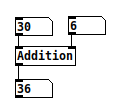

Making media objects with Avendish
This book is two things: a tutorial for the usage of Avendish, intertwined with an explanation of the concepts and implementation.
Avendish aims to enable media objects / processors authors to write the processor in the most natural way possible, and then to map this to host softwares or languages with so-called zero-cost abstraction.
By zero-cost abstraction, we mean zero run-time cost. However, we'll see that the system actually enables extremely short compile times compared to the norm in C++.
The library is borne from:
-
The necessity to reduce duplication among media processors in C++.
-
Allowing to express the quintessence of a given media processor.
- There should be no compromise at any point: the user of the library must be able to declare all the properties of a media processor, whether it processes audio, video, MIDI, messages, etc...
- The way this is expressed should be the simplest possible way in C++, in the sense that the code should be as natural as possible: just declaring variables should be sufficient. The lack of proper reflection in C++ still limits this in a way, but we will see that it is already possible to get quite far !
- For a given processor, multiple potential expressions are possible. We aim to capture most possible expressions: for instance, it may be more natural for a given audio processor to implement it in a sample-wise way (each audio sample processed one-by-one), and for another to be implemented through buffer-wise processing.
-
The observation that the implementation of a media processor has no reason of depending on any kind of binding library: those are two entirely orthogonal concerns. Yet, due to how the language works, for the longest time writing such a processor necessarily embedded it inside some kind of run-time framework: JUCE, DPF, iPlug, etc. These frameworks are all great, but also all make compromises in terms of what is possible to express. Data types will be limited to a known list, UI will have to be written with a specific UI framework, etc. In contrast, Avendish processors are much more open ; processors can be written in their "canonic" form. The various bindings will then try to map as much as is possible to the environments they are bound to.
In addition, such frameworks are generally not suitable for embedded platforms such as micro-controllers, etc. JUCE does not work on ESP32 :-)
In contrast, Avendish processors can be written in a way that does not depend on any existing library, not even the standard C or C++ libraries, which makes them trivially portable to such platforms. The only required thing is a C++ compiler, really !
Why C++
To ease porting of most effects, which are also in C++. Step by step, we will be able to lift them towards maybe higher-level descriptions, but first I believe that having something in C++ is important to allow capturing the semantics of the vast majority of media processors in existence.
Also because this is the language I know best =p
Non-C++ alternatives exist: FAUST and SOUL are the two most known and are great inspirations for Avendish ; they focus however mainly on audio processing. Avendish can be used to make purely message-based processors for e.g. Max/MSP and PureData, Python objects, etc. or video processing objects (currently implemented only for ossia score, but could easily be ported to e.g. Jitter for Max, GEM for PureData, etc.).
What is really Avendish
- An ontology for media objects.
- An automated binding of a part of the C++ object semantics to other languages and run-time environments.
- An example implementation of this until C++ gets proper reflection and code generation features.
- Very, very, very, very uncompromising on its goals.
- Lots of fun C++20 code !
Getting started
Here is a minimal, self-contained definition of an Avendish processor:
import std;
[[name: "Hello World"]]
export struct MyProcessor
{
void operator()() {
std::print("Henlo\n");
}
};
... at least, in an alternative universe where C++ has gotten custom attributes and reflection on those,
and where modules and std::print work consistently across all compilers ; in our universe, this is still a few years away. Keep hope, dear reader, keep hope !
Getting started, for good
Here is a minimal, self-contained definition of an Avendish processor, which works on 2022 compilers:
#pragma once
#include <cstdio>
struct MyProcessor
{
static consteval auto name() { return "Hello World"; }
void operator()() {
printf("Henlo\n");
}
};
Yes, it's not much. You may even already have some in your codebase without even being aware of it !
Now, you may be used to the usual APIs for making audio plug-ins and start wondering about all the things you are used too and that are missing here:
- Inheritance or shelving function pointers in a C struct.
- Libraries: defining an Avendish processor does not in itself require including anything. A central point of the system is that everything can be defined through bare C++ constructs, without requiring the user to import types from a library. A library of helpers is nonetheless provided, to simplify some repetitive cases, but is in no way mandatory ; if anything, I encourage anyone to try to make different helper APIs that fit different coding styles.
- Functions to process audio such as
void process(double** inputs, double** outpus, int frames);
We'll see how all the usual amenities can be built on top of this and simple C++ constructs such as variables, methods and structures.
Line by line
// This line is used to instruct the compiler to not include a header file multiple times.
#pragma once
// This line is used to allow our program to use `printf`:
#include <cstdio>
// This line declares a struct named HelloWorld. A struct can contain functions, variables, etc.
// It could also be a class - in C++, there is no strong semantic difference between either.
struct MyProcessor
{
// This line declares a function that will return a visible name to show to our
// users.
// - static is used so that an instance of HelloWorld is not needed:
// we can just refer to the function as HelloWorld::name();
// - consteval is used to enforce that the function can be called at compile-time,
// which may enable optimizations in the backends that will generate plug-ins.
// - auto because it does not matter much here, we know that this is a string :-)
static consteval auto name() { return "Hello World"; }
// This line declares a special function that will allow our processor to be executed as follows:
//
// HelloWorld the_processor;
// the_processor();
//
// ^ the second line will call the "operator()" function.
void operator()()
{
// This one should hopefully be obvious :-)
printf("Henlo\n");
}
};
Compiling our processor
Environment set-up
Before anything, we need a C++ compiler. The recommandation is to use Clang (at least clang-13). GCC 11 also works with some limitations. Visual Studio is sadly still not competent enough.
- On Windows, through llvm-mingw.
- On Mac, through Xcode.
- On Linux, through your distribution packages.
Avendish's code is header-only ; however, CMake automatizes correctly linking to the relevant libraries, and generates a correct entrypoint for the targeted bindings, thus we recommend installing it.
Ninja is recommended: it makes the build faster.
The APIs and SDK that you wish to create plug-ins / bindings for must also be available:
- PureData: needs the PureData API.
- m_pd.h and pd.lib must be findable through
CMAKE_PREFIX_PATH. - On Linux this is automatic if you install PureData through your distribution.
- m_pd.h and pd.lib must be findable through
- Max/MSP: needs the Max SDK.
- Pass
-DAVND_MAXSDK_PATH=/path/to/max/sdkto CMake.
- Pass
- Python: needs pybind11.
- Installable through most distro's repos.
- ossia: needs libossia.
- clap: needs clap.
- UIs can be built with Qt or Nuklear.
- Qt is installable easily through aqtinstall.
- VST3: needs the Steinberg VST3 SDK.
- Pass
-DVST3_SDK_ROOT=/path/to/vst3/sdkto CMake.
- Pass
- By default, plug-ins compatible with most DAWs through an obsolete, Vintage, almost vestigial, API will be built. This does not require any specific dependency to be installed, on the other hand it only supports audio plug-ins.
Building the template
The simplest way to get started is from the template repository: simply clear the Processor.cpp file for now and put the content in Processor.hpp.
Here's a complete example (from bash):
$ git clone https://github.com/celtera/avendish-audio-processor-template
$ mkdir build
$ cd build
$ cmake ../avendish-audio-processor-template
$ ninja # or make -j8
This should produce various binaries in the build folder: for instance, a PureData object (in build/pd), a Python one (in build/python, etc.).
Running the template in Python
Once the processor is built, we can for instance run it in Python:
Let's try to run our processor through the Python bindings:
$ cd build/python
# Check that our processor was built correctly
$ ls
pymy_processor.so
# Run it
$ python
>>> import pymy_processor
>>> proc = pymy_processor.Hello_World()
>>> proc.process()
Henlo
Running the template in PureData
Similarly, one can run the template in PureData:
$ cd build/pd
# Check that our processor was built correctly
$ ls
my_processor.l_ia64
# Run it
$ pd -lib my_processor
Make the following patch:

When sending a bang, the terminal in which PureData was launched should also print "Henlo". We'll see in a later chapter how to print on Pd's own console instead.
Running in DAWs
We could, but so far our object is not really an object that makes sense in a DAW: it does not process audio in any way. We'll see in further chapters how to make audio objects.
Adding ports
Our processor so far does not process much. It just reacts to an external trigger, to invoke a print function.
Note that the way this trigger is invoked varies between environments: in Python, we called a
process()function, while in PureData, we sent a bang to our object. That is one of the core philosophies of Avendish: bindings should make it so that the object fits as much as possible with the environment's semantics and idioms.
Most actual media processing systems work with the concept of ports to declare inputs and outputs, and Avendish embraces this fully.
Here is the code of a simple processor, which computes the sum of two numbers.
struct MyProcessor
{
static consteval auto name() { return "Addition"; }
struct
{
struct { float value; } a;
struct { float value; } b;
} inputs;
struct
{
struct { float value; } out;
} outputs;
void operator()() { outputs.out.value = inputs.a.value + inputs.b.value; }
};
Compiling and running this yields for instance a PureData object which can be used like this:

Note that the object respects the usual semantics of PureData: sending a message to the leftmost inlet will trigger the computation. Sending a message to the other inlets will store the value internally but won't trigger the actual computation.
For some objects, other semantics may make sense: creating an alternative binding to PureData which would implement another behaviour, such as triggering the computation only on "bang" messages, or on any input on any inlet, would be a relatively easy task.
Let's try in Python:
>>> import pymy_processor
>>> proc = pymy_processor.Addition()
>>> proc.process()
>>> p.input_0 = 123
>>> p.input_1 = 456
>>> p.process()
>>> p.output_0
579.0
Here the semantics follow usual "object" ones. You set some state on the object and call methods on it, which may change this state.
One could also make a binding that implements functional semantics, by passing the state of the processor as an immutable object instead. Python is already slow enough, though :p
Syntax explanation
Some readers may be surprised by the following syntax:
struct { float value; } a;
What it does is declare a variable a whose type is an unnamed structure.
Note that this is a distinct concept from anonymous structures:
struct { float value; };
which are legal in C but not in C++ (although most relevant compilers accept them), and are mostly useful for implementing unions:
union vec3 {
struct { float x, y, z; };
struct { float r, g, b; };
};
union vec3 v;
v.x = 1.0;
v.g = 2.0;
Motivation for using unnamed structures in Avendish is explained afterwards.
Naming things
In an ideal world, what we would have loved is writing the following code:
struct MyProcessor
{
static consteval auto name() { return "Addition"; }
struct
{
float a;
float b;
} inputs;
struct
{
float out;
} outputs;
void operator()() { outputs.out = inputs.a + inputs.b; }
};
and have our Python processor expose us variables named a, b and out. Sadly, without reflection on names, this is not possible yet. Thus, in the meantime we use structs to embed metadata relative to the ports:
struct MyProcessor
{
static consteval auto name() { return "Addition"; }
struct
{
struct {
static consteval auto name() { return "a"; }
float value;
} a;
struct {
static consteval auto name() { return "b"; }
float value;
} b;
} inputs;
struct
{
struct {
static consteval auto name() { return "out"; }
float value;
} out;
} outputs;
void operator()() { outputs.out.value = inputs.a.value + inputs.b.value; }
};
Now our Python example is cleaner to use:
>>> import pymy_processor
>>> proc = pymy_processor.Addition()
>>> proc.process()
>>> p.a = 123
>>> p.b = 456
>>> p.process()
>>> p.out
579.0
Refactoring
One can see how writing:
struct {
static consteval auto name() { return "foobar"; }
float value;
} foobar;
for 200 controls would get boring quick. In addition, the implementation of our processing function is not as clean as we'd want: in an ideal world, it would be just:
void operator()() { outputs.out = inputs.a + inputs.b; }
Thankfully, we can introduce our own custom abstractions without breaking anything: the only thing that matters is that they follow the "shape" of what a parameter is.
This shape is defined (as a first approximation) as follows:
template<typename T>
concept parameter = requires (T t) { t.value = {}; };
In C++ parlance, this means that a type can be recognized as a parameter if
- It has a member called
value. - This member is assignable with some default value.
For instance:
struct bad_1 {
const int value;
};
struct bad_2 {
void value();
};
class bad_3 {
int value;
};
are all invalid parameters.
This can be ensured easily by asking the compiler:
static_assert(!parameter<bad_1>);
static_assert(!parameter<bad_2>);
static_assert(!parameter<bad_3>);
static_assertis a C++ feature which allows to check a predicate at compile-time. If the predicate is false, the compiler will report an error.
Avendish will simply not recognize them and they won't be accessible anywhere.
Here are examples of valid parameters:
struct good_1 {
int value;
};
struct good_2 {
std::string value;
};
template<typename T>
struct assignable {
T& operator=(T x) {
printf("I changed !");
this->v = x;
return this->v;
}
T v;
};
class good_3 {
public:
assignable<double> value;
};
This can be ensured again by asking the compiler:
static_assert(parameter<good_1>);
static_assert(parameter<good_2>);
static_assert(parameter<good_3>);
Avendish provides an helper library, halp (Helper Abstractions for Literate Programming), which match this pattern. However, users are encouraged to develop their own abstractions that fit their preferred coding style :-)
Ports with the helper library
Here is how our processor looks with the current set of helpers:
#pragma once
#include <halp/controls.hpp>
struct MyProcessor
{
// halp_meta(A, B) expands to static consteval auto A() { return B; }
halp_meta(name, "Addition")
struct
{
// val_port is a simple type which contains
// - a member value of type float
// - the name() metadata method
// - helper operators to allow easy assignment and use of the value.
halp::val_port<"a", float> a;
halp::val_port<"b", float> b;
} inputs;
struct
{
halp::val_port<"out", float> out;
} outputs;
void operator()() { outputs.out = inputs.a + inputs.b; }
};
If one really does not like templates, the following macro could be defined instead to make custom ports:
#define my_value_port(Name, Type) \
struct { \
static consteval auto name() { return #Name; } \
Type value; \
} Name;
// Used like:
my_value_port(a, float)
my_value_port(b, std::string)
... etc ...
Likewise if one day the metaclasses proposal comes to pass, it will be possible to convert:
meta_struct
{
float a;
float b;
} inputs;
into a struct of the right shape, automatically, at compile-time, and all the current bindings will keep working.
Port metadatas
Our ports so far are very simple: floating-point values, without any more information attached than a name to show to the user.
Most of the time, we'll want to attach some semantic metadata to the ports: for instance, a range of acceptable values, the kind of UI widget that should be shown to the user, etc.
Defining a min/max range
Here is how one can define a port with such a range:
struct {
static consteval auto name() { return "foobar"; }
struct range {
float min = -1.;
float max = 1.;
float init = 0.5;
};
float value{};
} foobar;
Here is another version which will be picked up too:
struct {
static consteval auto name() { return "foobar"; }
static consteval auto range() {
struct {
float min = -1.;
float max = 1.;
float init = 0.5;
} r;
return r;
};
float value{};
} foobar;
More generally, in most cases, Avendish will try to make sense of the things the author declares, whether they are types, variables or functions. This is not implemented entirely consistently yet, but it is a goal of the library in order to enable various coding styles and as much freedom of expression as possible for the media processor developer.
Keeping metadata static
Note that we should still be careful in our struct definitions to not declare normal member variables for common metadata, which would take valuable memory and mess with our cache lines. This reduces performance for no good reason: imagine instantiating 10000 "processor" objects, you do not want each processor to carry the overhead of storing the range as a member variable, such as this:
struct {
const char* name = "foobar";
struct {
float min = -1.;
float max = 1.;
float init = 0.5;
} range;
float value{};
} foobar;
// In this case:
static_assert(sizeof(foobar) == 4 * sizeof(float) + sizeof(const char*));
// sizeof(foobar) == 24 on 64-bit systems
// While in the previous cases, the "name" and "range" information is stored in a static space in the binary ; its cost is paid only once:
static_assert(sizeof(foobar) == sizeof(float));
// sizeof(foobar) == 4
Testing on a processor
If we modify our example processor this way:
struct MyProcessor
{
static consteval auto name() { return "Addition"; }
struct
{
struct {
static consteval auto name() { return "a"; }
struct range {
float min = -10.;
float max = 10.;
float init = 0.;
};
float value;
} a;
struct {
static consteval auto name() { return "b"; }
struct range {
float min = -1.;
float max = 1.;
float init = 0.;
};
float value;
} b;
} inputs;
struct
{
struct {
static consteval auto name() { return "out"; }
float value;
} out;
} outputs;
void operator()() { outputs.out.value = inputs.a.value + inputs.b.value; }
};
then some backends will start to be able to do interesting things, like showing relevant UI widgets, or clamping the inputs / outputs.
This is not possible in all back-ends, sadly. Consider for instance PureData: the way one adds a port is by passing a pointer to a floating-point value to Pd, which will write directly the inbound value at the memory address: there is no point at which we could plug-in to perform clamping of the value.
Two alternatives would be possible in this case:
- Change the back-end to instead expect all messages on the first inlet, as those can be captured. This would certainly yield lower performance as one now would have to pass a symbol indicating the parameter so that the object knows to which port the input should map.
- Implement an abstraction layer which would duplicate the parameters with their clamped version, and perform the clamping on all parameters whenever the process function gets called. This would however be hurtful in terms of performance and memory use.
Defining UI widgets
Avendish can recognize a few names that will indicate that a widget of a certain type must be created.
For instance:
struct {
enum { knob };
static consteval auto name() { return "foobar"; }
struct range {
float min = -1.;
float max = 1.;
float init = 0.5;
};
float value{};
} foobar;
Simply adding the enum definition in the struct will allow the bindings to detect it at compile-time, and instantiate an appropriate UI control.
The following widget names are currently recognized:
bang, impulse
button, pushbutton
toggle, checkbox,
hslider, vslider, slider
spinbox,
knob,
lineedit,
choices, enumeration
combobox, list
xy,
color,
hbargraph, vbargraph, bargraph
This kind of widget definition is here to enable host DAWs to automatically generate appropriate UIs automatically.
A further chapter will present how to create entirely custom painted UIs and widgets.
Widget helpers
To simplify the common use case of defining a port such as "slider with a range", a set of common helper types is provided.
Here is our example, now as refined as it can be ; almost no character is superfluous or needlessly repeated except the names of controls:
#pragma once
#include <halp/controls.hpp>
struct MyProcessor
{
halp_meta(name, "Addition")
struct
{
halp::hslider_f32<"a", halp::range{.min = -10, .max = 10, .init = 0}> a;
halp::knob_f32<"b" , halp::range{.min = -1, .max = 1, .init = 0}> b;
} inputs;
struct
{
halp::hbargraph_f32<"out", halp::range{.min = -11, .max = 11, .init = 0}> out;
} outputs;
void operator()() { outputs.out = inputs.a + inputs.b; }
};
This is how an environment such as ossia score renders it:

Note that even with our helper types, the following holds:
static_assert(sizeof(MyProcessor) == 3 * sizeof(float));
That is, an instance of our object weighs in memory exactly the size of its inputs and outputs, nothing else. In addition, the binding libraries try extremely hard to not allocate any memory dynamically, which leads to very concise memory representations of our media objects.
Writing audio processors
The processors we wrote until now only processed "control" values.
As a convention, those are values that change infrequently, relative to the audio rate: every few milliseconds, as opposed to every few dozen microseconds for individual audio samples.
Argument-based processors
Let's see how one can write a simple audio filter in Avendish:
struct MyProcessor
{
static consteval auto name() { return "Distortion"; }
float operator()(float input)
{
return std::tanh(input);
}
};
That's it. That's the processor :-)
Maybe you are used to writing processors that operate with buffers of samples. Fear not, here is another valid Avendish audio processor, which should reassure most readers:
struct MyProcessor
{
static consteval auto name() { return "Distortion"; }
static consteval auto input_channels() { return 2; }
static consteval auto output_channels() { return 2; }
void operator()(double** inputs, double** outputs, int frames)
{
for (int c = 0; c < input_channels(); ++c)
{
for (int k = 0; k < frames; k++)
{
outputs[c][k] = std::tanh(inputs[c][k]);
}
}
}
};
The middle-ground of a processor that processes a single channel is also possible (and so is the possibility to use floats or doubles for the definition of the processor):
struct MyProcessor
{
static consteval auto name() { return "Distortion"; }
void operator()(float* inputs, float* outputs, int frames)
{
for (int k = 0; k < frames; k++)
{
outputs[k] = std::tanh(inputs[k]);
}
}
};
Those are all ways that enable quickly writing very simple effects (although a lot of ground is already covered). For more advanced systems, with side-chains and such, it is preferable to use proper ports instead.
Port-based processors
Here are three examples of valid audio ports:
- Sample-wise
struct {
static consteval auto name() { return "In"; }
float sample{};
};
- Channel-wise
struct {
static consteval auto name() { return "Out"; }
float* channel{};
};
- Bus-wise, with a fixed channel count. Here, bindings will ensure that there are always as many channels allocated.
struct {
static consteval auto name() { return "Ins"; }
static constexpr int channels() { return 2; }
float** samples{}; // At some point this should be renamed bus...
};
- Bus-wise, with a modifiable channel count. Here, bindings will put exactly as many channels as the end-user of the software requested ; this count will be contained in
channels.
struct {
static consteval auto name() { return "Outs"; }
int channels = 0;
double** samples{}; // At some point this should be renamed bus...
};
Helpers
halp provides helper types for these common cases:
halp::audio_sample<"A", double> audio;
halp::audio_channel<"B", double> audio;
halp::fixed_audio_bus<"C", double, 2> audio;
halp::dynamic_audio_bus<"D", double> audio;
Important: it is not possible to mix different types of audio ports in a single processor: audio sample and audio bus operate necessarily on different time-scales that are impossible to combine in a single function. Technically, it would be possible to combine audio channels and audio buses, but for the sake of simplicity this is currently forbidden.
Likewise, it is forbidden to mix float and double inputs for audio ports (as it simply does not make sense: no host in existence is able to provide audio in two different formats at the same time).
Monophonic processors
There are three special cases:
- Processors with one sample input and one sample output.
- Processors with one channel input and one channel output.
- Processors with one dynamic bus input, one dynamic bus output, and no fixed channels being specified.
In these three cases, the processor is recognized as polyphony-friendly. That means that in cases 1 and 2, the processor will be instantiated potentially multiple times automatically, if used in e.g. a stereo DAW.
In case 3, the channels of inputs and outputs will be set to the same count, which comes from the host.
Polyphonic processors should use types for their I/O
Let's consider the following processor:
struct MyProcessor
{
static consteval auto name() { return "Distortion"; }
struct {
struct { float value; } gain;
} inputs;
double operator()(double input)
{
accumulator = std::fmod(accumulator+1.f, 10.f);
return std::tanh(inputs.gain.value * input + accumulator);
}
private:
double accumulator{};
};
We have three different values involved:
inputis the audio sample that is to be processed.inputs.gain.valueis an external control which increases or decreases the distortion.accumulatoris an internal variable used by the processing algorithm.
Now consider this in the context of polyphony: the only thing that we can do is instantiate MyProcessor three times.
- We cannot call
operator()of a single instance on multiple channels, as the internal state must stay independent of the channels. - But now the inputs are duplicated for all instances. If we want to implement a filter bank with thousands of duplicated processors in parallel, this would be a huge waste of memory if they all depend on the same
gainvalue.
Thus, it is recommended in this case to use the following form:
struct MyProcessor
{
static consteval auto name() { return "Distortion"; }
struct inputs {
struct { float value; } gain;
};
struct outputs { };
double operator()(double input, const inputs& ins, outputs& outs)
{
accumulator = std::fmod(accumulator+1.f, 10.f);
return std::tanh(ins.gain.value * input + accumulator);
}
private:
double accumulator{};
};
Here, Avendish will instantiate a single inputs array, which will be shared across all polyphony voices, which will likely use less memory and be more performant in case of large amount of parameters & voices.
Here is what I would term the "canonic" of this version, with additionally our helpers to reduce typing, and the audio samples passed through ports instead of through arguments:
struct MyProcessor
{
static consteval auto name() { return "Distortion"; }
struct inputs {
halp::audio_sample<"In", double> audio;
halp::hslider_f32<"Gain", halp::range{.min = 0, .max = 100, .init = 1}> gain;
};
struct outputs {
halp::audio_sample<"A", double> audio;
};
void operator()(const inputs& ins, outputs& outs)
{
accumulator = std::fmod(accumulator + 0.01f, 10.f);
outs.audio = std::tanh(ins.gain * ins.audio + accumulator);
}
private:
double accumulator{};
};
Passing inputs and outputs as types is also possible for all the other forms described previously - everything is possible, write your plug-ins as it suits you best :) and who knows, maybe with metaclasse one would also be able to generate the more efficient form directly.
Messages
So far, we already have something which allows to express a great deal of audio plug-ins, as well as many objects that do not operate in a manner synchronized to a constant sound input, but also in a more asynchronous way, and with things more complicated than single float, int or string values.
A snippet of code is worth ten thousand words: here is how one defines a message input.
struct MyProcessor {
struct messages {
struct {
static consteval auto name() { return "dump"; }
void operator()(MyProcessor& p, double arg1, const std::string& arg2) {
std::cout << arg1 << ";" << arg2 << "\n";
}
} my_message;
};
};
Messages are of course only meaningful in environments which support them. One argument messages are equivalent to arguments. If there is more than one arguments, not all host systems may be able to handle them ; for instance, it does not make much sense for VST plug-ins. On the other hand, programming language bindings or systems such as Max and PureData have no problem with them.
Passing existing functions
The following syntaxes are also possible:
void free_function() { printf("Free function\n"); }
struct MyProcessor {
void my_member(int x);
struct messages {
// Using a pointer-to-member function
struct {
static consteval auto name() { return "member"; }
static consteval auto func() { return &MyProcessor::my_member; }
} member;
// Using a lambda-function
struct
{
static consteval auto name() { return "lambda_function"; }
static consteval auto func() {
return [] { printf("lambda\n"); };
}
} lambda;
// Using a free function
struct
{
static consteval auto name() { return "function"; }
static consteval auto func() { return free_function; }
} freefunc;
};
};
In every case, if one wants access to the processor object, it has to be the first argument of the function (except the non-static-member-function case where it is not necessary as the function already has access to the this pointer by definition).
Type-checking
Messages are type-checked: in the example above, for instance, PureData will return an error for the message [dump foo bar>. For the message [dump 0.1 bar> things will however work out just fine :-)
Arbitrary inputs
It may be necessary to have messages that accept an arbitrary number of inputs. Here is how:
struct {
static consteval auto name() { return "args"; }
void operator()(MyProcessor& p, std::ranges::input_range auto range) {
for(const std::variant& argument : range) {
// Print the argument whatever the content
// (a library such as fmt can do that directly)
std::visit([](auto& e) { std::cout << e << "\n"; }, argument);
// Try to do something useful with it - here the types depend on what the binding give us. So far only Max and Pd support that so the only possible types are floats, doubles and std::string_view
if(std::get_if<double>(argument)) { ... }
else if(std::get_if<std::string_view>(argument)) { ... }
// ... etc
}
}
} my_variadic_message;
Overloading
Overloading is not supported yet, but there are plans for it.
How does the above code work ?
I think that this case is pretty nice and a good example of how C++ can greatly improve type safety over C APIs: a common problem for instance with Max or Pd is accessing the incorrect member of an union when iterating the arguments to a message.
Avendish has the following method, which transforms a Max or Pd argument list, into an iterable coroutine-based range of std::variant.
using atom_iterator = avnd::generator<std::variant<double, std::string_view>>;
inline atom_iterator make_atom_iterator(int argc, t_atom* argv)
{
for (int i = 0; i < argc; ++i) {
switch (argv[i].a_type) {
case A_FLOAT: {
co_yield argv[i].a_w.w_float;
break;
}
case A_SYM: {
co_yield std::string_view{argv[i].a_w.w_sym->s_name};
break;
}
default:
break;
}
}
}
Here, atom_iterator is what gets passed to my_variadic_message. It allows to deport the iteration of the loop over the arguments into the calling code, but handles the matching from type to union member in a generic way, which removes an entire class of errors.